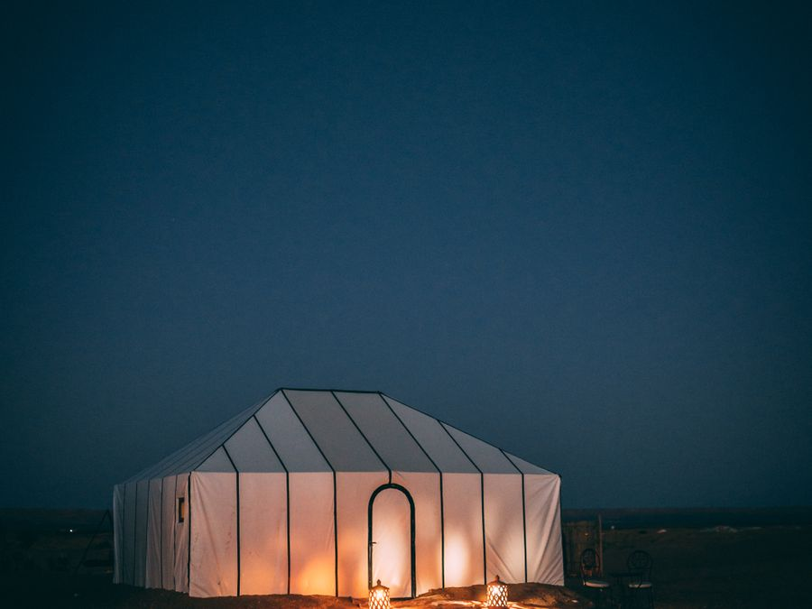

Tour privado · 7 días / 6 noches
La Gran Ruta del Sahara: tour privado de 7 días desde Marrakech
Un tour privado de 7 días desde Marrakech al desierto del Sahara con chófer propio: cruza el Alto Atlas, duerme en una kasbah en Ait Ben Haddou, recorre las gargantas del Dades y del Todra, entra en camello en las dunas de Merzouga y vuelve por los palmerales del valle del Draa.
- Tour 100% privado
- Recogida en tu hotel de Marrakech
- 2 noches en el Sahara
- Cancelación gratis hasta 14 días
Marruecos en una semana: montañas, kasbahs y el Sahara
Este tour de 7 días desde Marrakech es nuestra ruta por el desierto más completa. Es un circuito privado: viajas solo con tu familia o amigos, paras donde quieras y duermes en kasbahs, riads y un campamento de lujo en las dunas del Erg Chebbi.
La mejor ruta de 7 días por Marruecos desde Marrakech es un circuito por Ait Ben Haddou, las gargantas del Dades y del Todra y las dunas de Merzouga, con regreso por el valle del Draa y Telouet. Siete días permiten dos noches en el Sahara y una sola etapa larga de coche, así que el viaje es tranquilo, sin prisas.
- Marrakech
- Ait Ben Haddou
- Garganta del Dades
- Garganta del Todra
- Merzouga
- Valle del Draa
- Telouet
- Marrakech
Itinerario de 7 días desde Marrakech
1Marrakech – Tizi n’Tichka – Ait Ben Haddou≈ 190 km · 4 h de coche
Recogida en tu riad u hotel de Marrakech a las 8:30. Cruzamos el Alto Atlas por el puerto de Tizi n’Tichka (2.260 m), con paradas en pueblos bereberes y un té a la menta con una familia local. Por la tarde visitamos el ksar de Ait Ben Haddou, Patrimonio de la Humanidad por la UNESCO y escenario de Gladiator y Juego de Tronos, y vemos el atardecer desde el antiguo granero en lo alto de la colina.
2Ouarzazate – Skoura – Valle de las Rosas – Garganta del Dades≈ 170 km · 3,5 h de coche
Atravesamos Ouarzazate, “la puerta del desierto”, hasta el palmeral de Skoura y la Kasbah Amridil. Seguimos la Ruta de las Mil Kasbahs hasta Kelaat M’Gouna, la cuna del agua de rosas marroquí, y subimos las famosas curvas de la garganta del Dades y las rocas de los “Dedos de Mono”.
3Garganta del Todra – Erfoud – Merzouga en camello≈ 290 km · 5 h de coche
Caminamos entre las paredes de roca de la garganta del Todra, de hasta 300 metros de altura, cerca de Tinghir. Continuamos por los talleres de fósiles de Erfoud hasta Merzouga. Al atardecer, entras en camello en las dunas del Erg Chebbi hasta tu campamento privado: jaima con baño propio, cena bajo las estrellas y tambores bereberes junto al fuego.
4Un día completo en el desierto del SaharaMerzouga · Erg Chebbi
Madrugamos para ver el amanecer desde lo alto de las dunas. Después exploramos el desierto en 4x4: el pueblo gnawa de Khamlia y su música, el mercado de Rissani en la antigua ruta caravanera de Sijilmasa, familias nómadas y el lago estacional de Dayet Srji. La tarde queda libre para hacer sandboard o un paseo en quad opcional.
5Merzouga – Alnif – N’Kob – Valle del Draa≈ 360 km · 6,5 h de coche
La etapa más larga del tour, con muchas paradas para descansar: el pueblo fósil de Alnif, las montañas del Saghro y N’Kob, el pueblo de las 45 kasbahs. Al final de la tarde llegamos al valle del Draa, los palmerales del río más largo de Marruecos, y a tu kasbah en Agdz.
6Agdz – Ouarzazate – Valle del Ounila – Telouet≈ 150 km · 3 h de coche
Visitamos la Kasbah Tamnougalt y seguimos hasta Ouarzazate y los Atlas Film Studios (entrada opcional). Por la tarde recorremos el valle del Ounila, la antigua ruta de las caravanas sobre el Atlas, hasta Telouet y los salones pintados de la kasbah del Glaoui.
7Telouet – Tizi n’Tichka – Marrakech≈ 170 km · 3,5 h de coche
Cruzamos el Alto Atlas por última vez, paramos en una cooperativa de mujeres de aceite de argán y comemos con vistas a las montañas. Te dejamos en tu alojamiento de Marrakech a primera hora de la tarde, con tiempo para disfrutar de la plaza Jemaa el-Fna de noche.
Por qué encanta este viaje de Marrakech al Sahara




Qué incluye tu tour privado
Incluido
- 4x4 o minivan privado con aire acondicionado
- Chófer que habla español o inglés
- Combustible, peajes y aparcamientos
- 6 noches: kasbahs, hoteles y campamento en el desierto
- Desayuno y cena todos los días
- Paseo en camello y excursión en 4x4 en Merzouga
- Recogida y regreso a tu hotel de Marrakech
No incluido
- Almuerzos y bebidas
- Entradas (Ait Ben Haddou, Atlas Studios, Telouet)
- Guías locales en los monumentos (opcional)
- Propinas y seguro de viaje
Dudas sobre el tour de 7 días desde Marrakech
¿Son suficientes 7 días para ver Marruecos desde Marrakech?
Sí. Siete días es la duración ideal para un tour por el desierto desde Marrakech: ves el Alto Atlas, Ait Ben Haddou, las gargantas del Dades y del Todra, pasas dos noches en el Sahara y conoces el valle del Draa sin jornadas de coche agotadoras.
¿Este tour de 7 días es privado?
Sí, es 100% privado. El coche, el chófer y el horario son solo para ti, desde un viajero hasta familias grandes, y puedes cambiar las paradas o los hoteles cuando quieras.
¿Cuál es la mejor época para un viaje al desierto desde Marrakech?
De marzo a mayo y de septiembre a noviembre son los mejores meses, con días cálidos y noches frescas. En verano hace mucho calor en el desierto (a menudo más de 40 °C) y en invierno las noches en Merzouga pueden bajar a cerca de 0 °C.
¿Se puede terminar el tour en Fez en lugar de Marrakech?
Sí. Desde Merzouga podemos subir hacia el norte por Midelt e Ifrane y terminar el viaje en Fez. Solo tienes que indicarlo al pedir tu presupuesto.
¿Es un buen tour para familias con niños?
Sí. Al ser privado, puedes hacer pausas cuando lo necesites, y el paseo en camello, las dunas y el campamento en el desierto encantan a los niños. Hay sillas infantiles bajo petición.
¿Cómo se reserva el tour?
Envíanos tus fechas por WhatsApp o por el formulario de contacto. Confirmas con un depósito del 20% y pagas el resto en Marruecos. La cancelación es gratuita hasta 14 días antes de la salida.
¿Listo para el Sahara?
Cuéntanos tus fechas y diseñamos tu tour privado de 7 días desde Marrakech, con los hoteles y el ritmo que mejor te encajen.
Escríbenos por WhatsAppVer todos los tours desde Marrakech